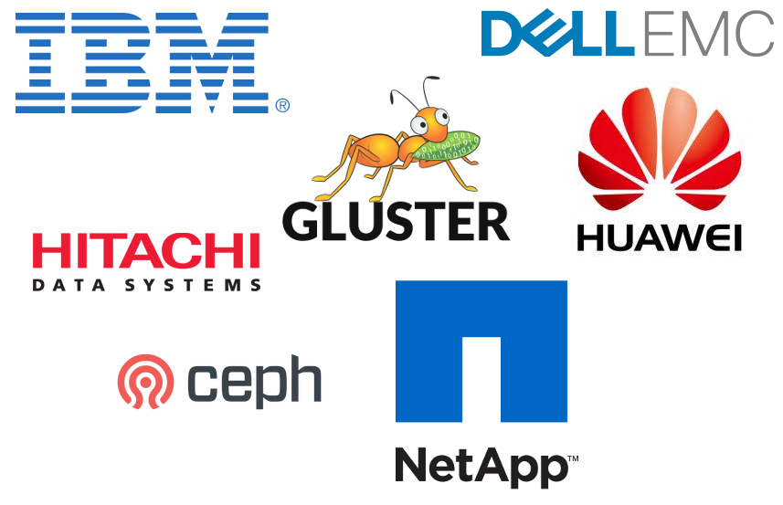
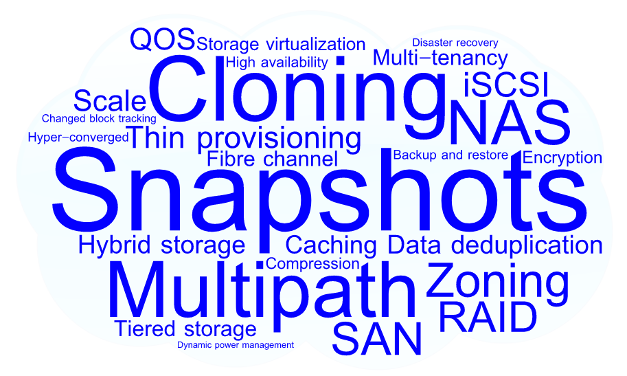
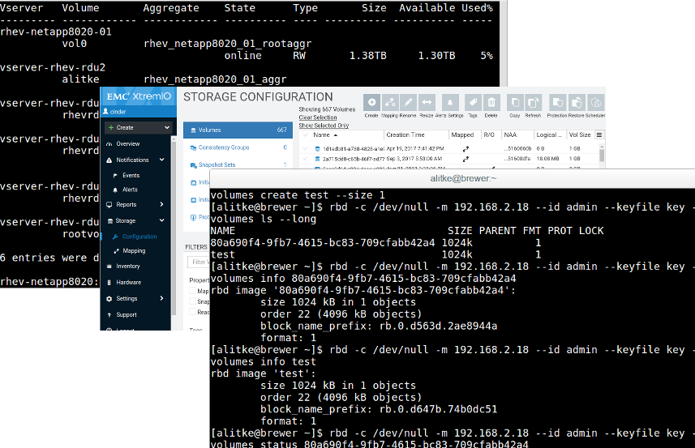
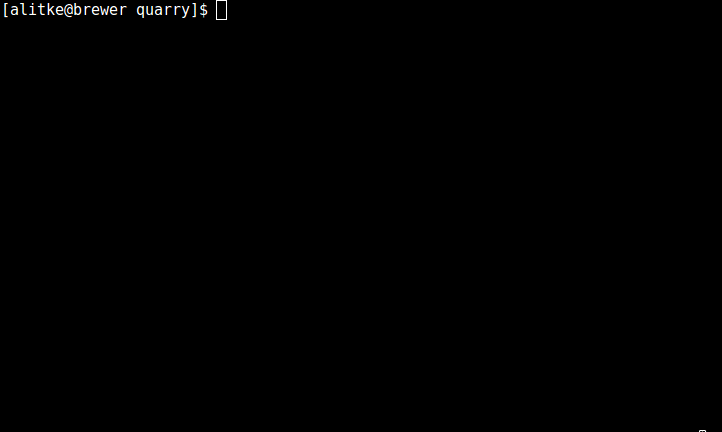
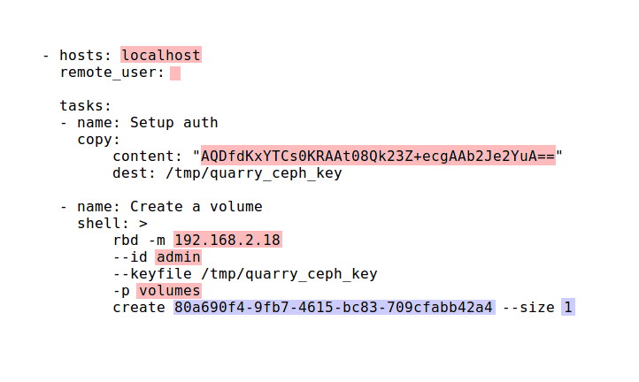

All your storage
are belong to Ansible

Adam Litke - alitke@redhat.com
Senior Software Engineer - Red Hat
August Penguin - 7.9.2017
Storage Vendors
Storage Features
Storage Management APIs
The readout
- Vendor and feature diversity can be good
- API fragmentation is bad for collaboration
- Can we build a community including:
- IT / DevOps
- Virtualization
- Container orchestration
- To provide:
- Vendor-neutral automation
- Efficient control plan operations
For example
My create volume
target: my-ceph-storage
operation: create_volume
params:
id: 80a690f4-9fb7-4615-bc83-709cfabb42a4
size: 1
Your create volume
target: your-netapp-storage
operation: create_volume
params:
id: 80a690f4-9fb7-4615-bc83-709cfabb42a4
size: 1
But what about Cinder
- ✔Mature and stable
- ✔Broad vendor support
- ✔Durable API and model
- ✖Too tightly coupled to Openstack
The plan
| Cinder | |
| - | deployment complexity |
| - | vertical integration |
| + | active community |
| = | profit! |
What is Ansible?
- Simple, human readable automation
- Declarative model
- Agentless
- Large ecosystem of modules and roles
- ansible.com
Quarry Ansible Role
- Jinja templating plus (not) secret sauce
- Playbooks define tasks that execute against storage targets
ansible-galaxy install aglitke.quarry
Operations
A common API to perform a storage task
- Every backend provides an implementation
- Create / Delete volume
- Attach / Detach volume
- Create / Delete snapshot
Backends
Storage type with a unique way of performing operations
- Ceph
- Gluster
- Netapp Data ONTAP
- Dell EMC XtremIO
- IBM DS8000
Targets
A backend instance defined by configuration parameters
- API URL
- Login credentials
- Namespace (cluster / pool / vserver)
How to use it
- Configure a storage target
- Write a playbook using the quarry role
- Run the playbook
Configure a storage target
---
target_host: localhost
target_user:
backend: ceph
backend_config:
osd: 192.168.2.18
id: admin
key: AQDfdKxYTCs0LSBAt08Qk23Z+ecgAAb2Je2YuA==
pool: volumes
Write a playbook
---
- hosts: localhost
roles:
- aglitke.quarry
vars:
generate_only: false
generated_playbook: "/tmp/playbook.yml"
target: myceph
operation: create_volume
params:
id: 80a690f4-9fb7-4615-bc83-709cfabb42a4
size: 1
Run the playbook
What happened?
- Validate playbook variables
- Load target configuration
- Select the template for this backend/operation
- Generate a playbook from template and parameters
- Execute generated playbook
Quarry role tasks
---
- include: check_vars.yml
- include: make_playbook.yml
when: generated_playbook is defined
- name: Run playbook
shell: ansible-playbook {{ generated_playbook }}
when:
- generated_playbook is defined
- not generate_only
Validating variables
- name: Checking that required playbook variables are set
fail: msg="Variable {{ item }} is not defined in the playbook"
with_items:
- target
- operation
- params
when: vars[item] is undefined
- name: Load target definition
include_vars:
file: "{{ target_definitions_dir }}/{{ target }}.yml"
- name: Checking that required target variables are set
fail: msg="Variable {{ item }} missing from the target definition {{ target }}"
with_items:
- target_host
- target_user
- backend
- backend_config
when: vars[item] is undefined
Generate playbook
---
- name: Generate playbook
template:
src: "{{ playbook_templates_dir }}/\
{{ backend }}/{{ operation }}.yml.j2"
dest: "{{ generated_playbook }}"
Operation template
- hosts: {{ target_host }}
remote_user: {{ target_user }}
tasks:
- name: Setup auth
copy:
content: "{{ backend_config.key }}"
dest: /tmp/quarry_ceph_key
- name: Create a volume
shell: >
rbd -m {{ backend_config.osd }}
--id {{ backend_config.id }}
--keyfile /tmp/quarry_ceph_key
-p {{ backend_config.pool }}
create {{ params.id }} --size {{ params.size }}
Generated playbook
Using a different target?
---
- hosts: localhost
roles:
- aglitke.quarry
vars:
generate_only: false
generated_playbook: "/tmp/playbook.yml"
target: myxtremio <== (change me) ==<
operation: create_volume
params:
id: 80a690f4-9fb7-4615-bc83-709cfabb42a4
size: 1
Integrating quarry
- Use the quarry role in your existing Ansible workflows
- Orchestrate backups via snapshots
- Provision luns for new hardware or VMs
- Infrastructure as code
- Add provisioning support to applications
- Generate playbooks in response to application events
- Run ansible via shell or python SDK
- Results available in JSON format
Work in progress
Questions?
https://galaxy.ansible.com/aglitke/prism/https://galaxy.ansible.com/aglitke/quarry/